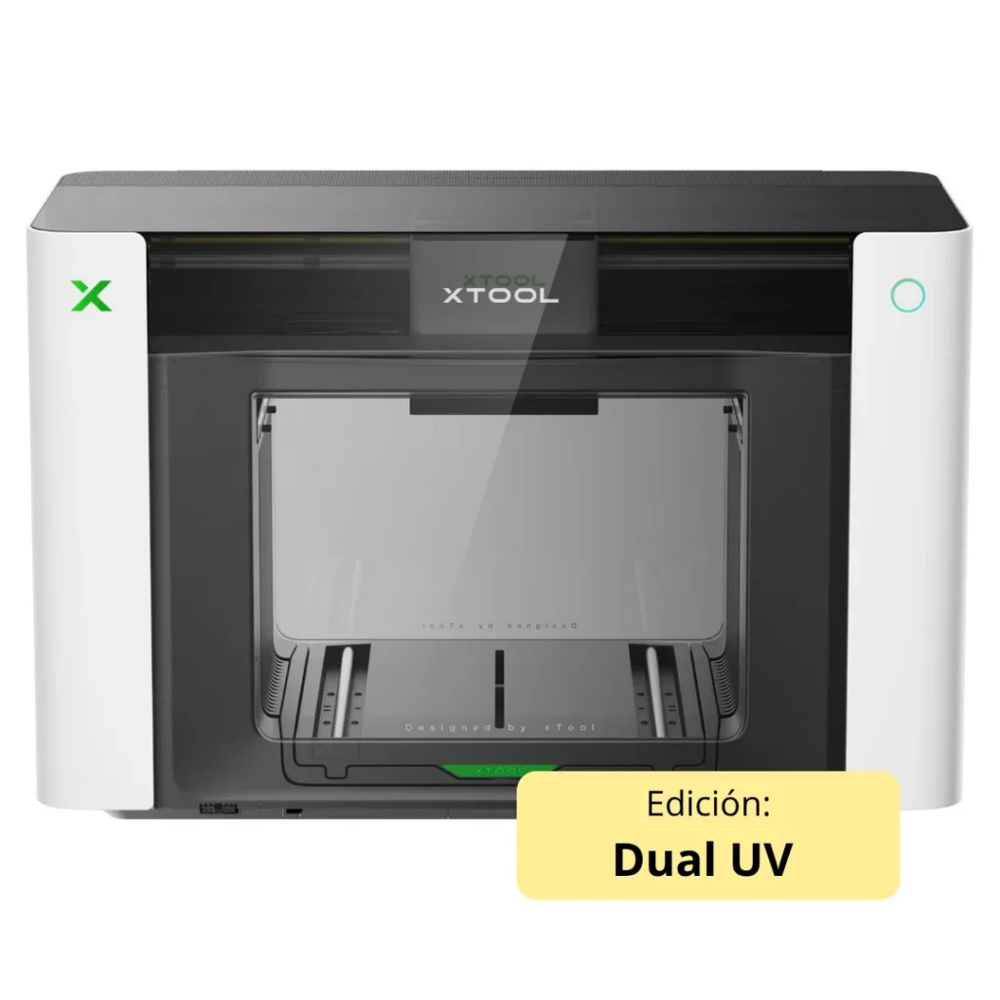

Impresora UV xTool O1 Omni Dual, impresora UV LED de doble cabezal para rotulación e impresión sobre objetos, con tintas fluorescentes, blanco flexible y texturas en relieve de hasta 7 mm.
Reserva. Envío estimado a partir del 31 de octubre de 2026.
Los botones de compra no funcionan: esta página es la maqueta para ver al asistente trabajando con vuestros datos.
Tal cual está publicado en vuestra web. El asistente solo puede afirmar lo que hay aquí: si le preguntan algo que no aparece, lo dice y avisa a una persona.
Especificaciones técnicas y comparativa de las 3 ediciones Comprueba en esta tabla por qué la integración de dos circuitos F1080 paralelos la convierte en la opción más rápida y potente de la gama para efectos premium. Comparativa de ediciones — Serie de impresión multimaterial xTool O1 Omni Especificación O1 Omni · Single UV O1 Omni · Dual UV O1 Omni · UV + DT Fabric Posición de gama Edición de entrada (nivel básico) Edición avanzada (efectos premium) Edición todo en uno (recomendada) Comprador ideal Taller de reclamo y agencia emergente que rentabiliza rígidos y objetos al menor coste de entrada Rotulista avanzado y productor de artículo promocional de lujo que busca margen por diferenciación visual Negocio de impresión bajo demanda y taller de merchandising híbrido de objeto y prenda Sustratos principales Rígidos (acrílico, madera, metal, vidrio, cerámica) y objetos curvos vía UV-DTF Rígidos y flexibles (cuero, lona, canvas), además de objetos curvos Rígidos, objetos curvos y textil (algodón, poliéster, tejidos, calzado, gorra) Tecnologías de impresión UV directa + UV-DTF UV directa + UV-DTF + DTG + DTF Cabezales de impresión 1 × Epson F1080 (UV) 2 × Epson F1080 (ambos UV) 2 × Epson F1080 (1 UV + 1 textil, circuitos aislados) Velocidad / producción Un cabezal: sin ventaja de velocidad frente a las ediciones dobles Doble cabezal UV: imprime color y blanco en paralelo — la más rápida de la gama en UV Doble cabezal UV + textil: paraleliza objeto y prenda; en UV opera con un cabezal Sistema de tintas UV CMYK + Blanco + Barniz (V) Tinta blanca UV Blanco rígido Blanco rígido + blanco flexible Blanco flexible (cuero / lona / canvas) No Sí (exclusivo de esta edición) Tintas fluorescentes (rojo / amarillo) Tinta textil (DT Fabric) No disponible CMYK + Blanco + Blanco (base acuosa, circuito aislado) Textil DTG y DTF Sí (DTG directo a prenda + DTF transfer de hoja) Relieve 3D · lenticular · barniz 3-en-1 Sí (relieve hasta 7 mm; mate / brillo / dorado) Resolución de impresión Hasta 720 × 1440 dpi (estándar 720 × 540 dpi) Sistema de visión Pixel-Scan™ (láser de área completa + CIS), 1440 × 1200 dpi Precisión de posicionamiento ±0,2 mm Previsualización de objeto Gemelo digital 1:1 de taza/vaso (compatible con el 90 % de vasos y tazas) Cama de impresión UV 330 × 122 mm (base), ampliable a 330 × 420 mm Plato textil DTG Sí, 300 × 390 mm (Garment tray incluida de fábrica) Gestión térmica de fluidos Calentamiento cerámico a 30 °C (UV) Calentamiento cerámico dual: 30 °C (UV) / 25 °C (textil DT) Mantenimiento automático SmartCycle™ 2.0 (agitación + circulación de blanco + protección de humedad; modo reposo ~14 días) Calidad de color Calidad comercial G7 IA creativa (xTool Studio) Generador de diseños por IA y generador 3D flotante Purificación de aire Aire purificado para uso en interior Certificación de tintas UV: GREENGUARD Gold, no reprotóxica UV: GREENGUARD Gold · Textil: OEKO-TEX® (+50 lavados sin degradarse) Software / compatibilidad xTool Studio · Windows y macOS Flujo Print & Cut (láser xTool) Compatible: P3, P2, P2S, S1, M2, M1 Ultra Accesorios compatibles Rotativo OR1 · Laminador LM1 · Alimentador RF1 · BatchFlow Jig Dimensiones totales 714 × 374 × 468,5 mm Peso (aprox.) 40,6 kg 41,12 kg Actualización de edición No actualizable tras la compra SKU P0101000532 P0101000537 P0101000536 + P0101000589 (Garment tray) Bundles disponibles + OR1 Rotary (Rotary bundle) + OR1 Rotary · Versatile (OR1 + LM1 + RF1) + OR1 Rotary · Versatile (OR1 + LM1 + RF1) · Garment tray incluida Rango de precio (IVA no incl.) 1.916 € – 2.216 € 2.583 € – 3.558 € 2.666 € – 3.641 € Precio base (IVA no incl.) 1.916 € 2.583 € 2.666 € Tintas especiales Servicio Técnico Automatización Conservación Tintas especiales Consumibles para efectos premium y colores flúor Abastecimiento de blanco flexible, rojo neón y amarillo fluorescente, tintas de reactividad exclusiva para esta configuración avanzada. Imagen Producto Referencia Precio Cantidad y carrito Tinta UV xTool O1 Omni Color / Formato (7) TINTA-UV-O1 Desde 17,49 € 17,49 € − + Añadir Elegir opciones Color / Formato Color / Formato Tinta UV especial xTool O1 Omni Color / Formato (5) TINTA-UV-FLUO-O1 Desde 24,99 € 24,99 € Servicio Técnico Repuestos para el doble cabezal de impresión Componentes y recambios oficiales certificados para mantener intacta la precisión de tus acabados de lujo y texturas complejas. Kit de Cabezal UV 01 xTool O1 Omni P0101000667 ID 41513 333,00 € 333,00 € Añadir Kit de Cabezal UV 02 xTool O1 Omni P0101000668 ID 41514 Automatización Accesorios para rotulación avanzada y flujo continuo Escala tu producción de alto volumen integrando periféricos como el laminador LM1 (hot foil) y el alimentador de rollo RF1. Alimentador de Rollo xTool O1 Omni RF1 P0101000605 ID 41506 Accesorio Rotatorio xTool O1 Omni OR1 P0102000243 ID 41504 Plantilla de Posicionamiento BatchFlow para xTool O1 Omni P0102000374 ID 41507 108,00 € 108,00 € Laminador xTool O1 Omni LM1 P0101000592 ID 41505 416,00 € 416,00 € Purificador de aire DTF y láser xTool SafetyPro AP2 P5010391 ID 37339 833,00 € 833,00 € Ventilador de conducto xTool IF2 2.0 P0102000113 ID 37244 166,00 € 166,00 € Conservación Mantenimiento B2
Abajo a la derecha está Cepe, el asistente. Lleva dentro los datos reales de esta ficha, los de la otra máquina que nos indicasteis y 44 consumibles y repuestos con su precio y disponibilidad.